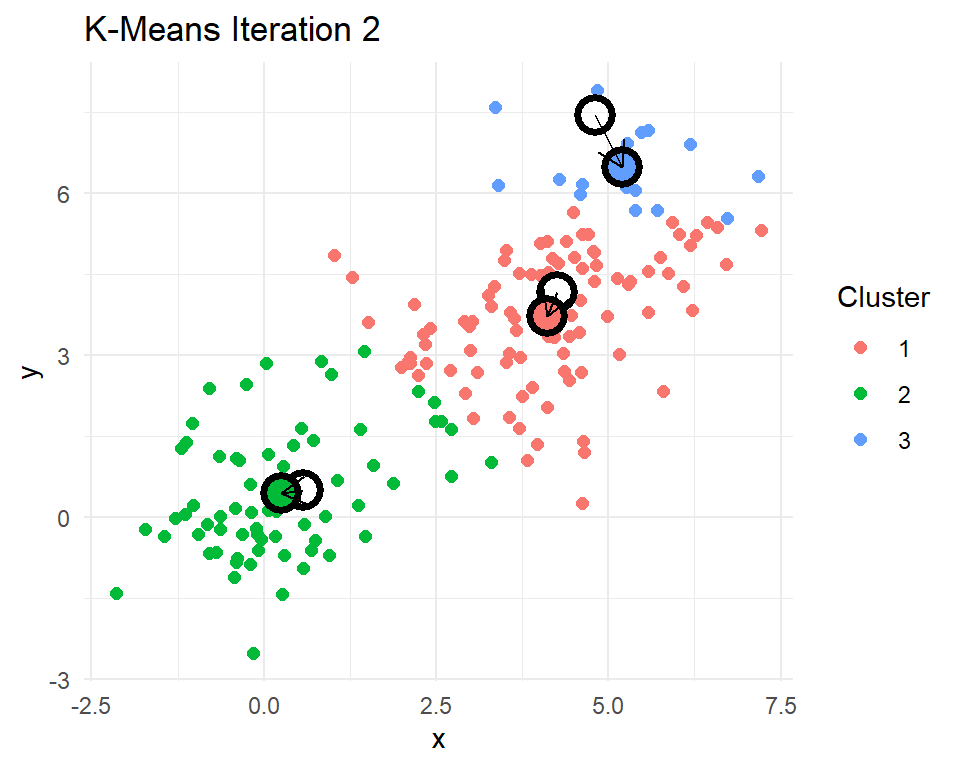
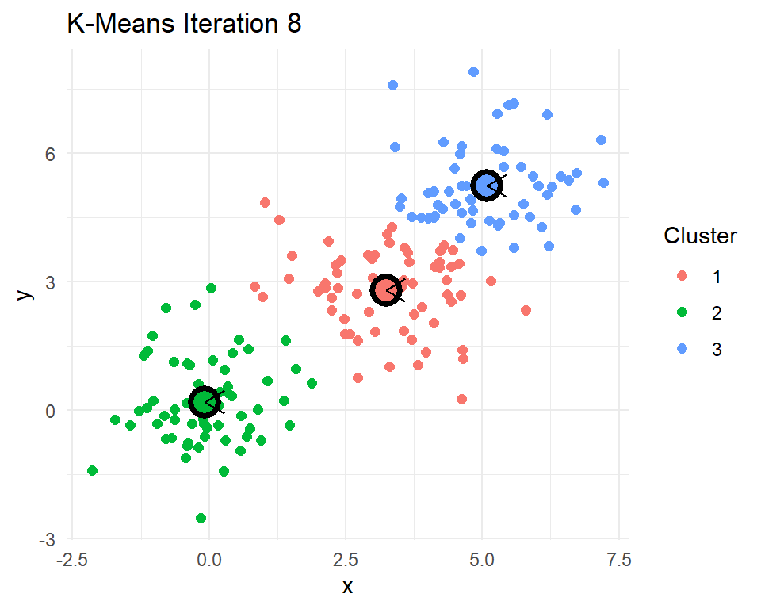

library(kableExtra)
library(dplyr)
library(tidyr)
library(stringr)
library(text2vec)
library(Matrix)Machine learning with text
1 Introduction
In this section we will use text2vec to explore the language used in a collection of police reports describing officer-involved shootings (OIS). These reports contain unstructured narrative text. Our goal is to transform that text into a format we can analyze using tools from natural language processing (NLP). We will walk through a typical text analysis process: tokenizing the reports, building a vocabulary, constructing a document-term matrix, and applying TF-IDF to highlight the most distinctive terms. Along the way, we will also examine co-occurrence patterns.
To start, we are going to need a couple of R packages to facilitate our work. text2vec will do most of the work converting the documents into a form of data that we can analyze.
As for the source of our documents, the Philadelphia Police Department posts (reports)[https://www.phillypolice.com/accountability/ois/] on each officer-involved shooting. I have pulled the data off their website and packaged it into an .RData file. Loading it will create the data frame ois. Details on how to pull the data off of the PPD website are part of my (R4crim collection)[https://github.com/gregridgeway/R4crim?tab=readme-ov-file] of scripts.
load("data/PPD OIS.RData")
ois |> select(-text) |> head() id location
1 24-37 3450 Vista Street, Philadelphia, PA
2 24-36 3250 A Street, Philadelphia, PA
3 24-35 5450 Chancellor Street, Philadelphia, PA
4 24-32 2950 E. Street, Philadelphia, PA
5 24-31 3350 Willits Road, Philadelphia, PA
6 24-30 6150 Lebanon Avenue, Philadelphia, PA
url date lon lat
1 https://www.phillypolice.com/ois/24-37/ 2024-12-10 -75.03885 40.04022
2 https://www.phillypolice.com/ois/24-36/ 2024-11-12 -75.12714 39.99956
3 https://www.phillypolice.com/ois/24-35/ 2024-11-10 -75.23050 39.95692
4 https://www.phillypolice.com/ois/24-32/ 2024-10-11 -75.12024 39.99345
5 https://www.phillypolice.com/ois/24-31/ 2024-10-03 -75.00908 40.05383
6 https://www.phillypolice.com/ois/ps24-30/ 2024-10-02 -75.24450 39.98175
addrmatch score addrtype
1 3450 Vista St, Philadelphia, Pennsylvania, 19136 100 StreetAddress
2 3250 A St, Philadelphia, Pennsylvania, 19134 100 StreetAddress
3 5450 Chancellor St, Philadelphia, Pennsylvania, 19139 100 StreetAddress
4 2950 E St, Philadelphia, Pennsylvania, 19134 100 StreetAddress
5 3350 Willits Rd, Philadelphia, Pennsylvania, 19136 100 StreetAddress
6 6150 Lebanon Ave, Philadelphia, Pennsylvania, 19151 100 PointAddressThe data include an incident ID, the date of the shooting, the address and coordinates where the shooting occurred, and a URL to the incident report. There is also a column called text containing the full text of the officer-involved shooting report. Some can be long, but here’s the first one as an example.
ois |> filter(id=="16-30") |> select(text) |> unlist() |> cat()
Narrative from OIS Report 16-30
PS#16-30 9/16/16 On Friday, September 16, 2016, at approximately 11:18 P.M., a uniformed sergeant in a marked police vehicle was seated in her parked vehicle in the 5100 block of Sansom Street, when a male approached and without warning, began to discharge a firearm, striking the sergeant, as she remained seated in her vehicle. The offender then began walking east on Sansom Street, stopping at a lounge/bar in the 5100 block of Sansom Street, where he discharged his firearm into the lounge/bar, striking a female employee and a male security guard. The offender continued walking east on Sansom Street to the 4900 block, where he discharged his firearm into an occupied parked vehicle, striking one female and one male occupant. Responding uniformed officers, in marked police vehicles, along with an officer from the University of Pennsylvania police force, located the offender in an alleyway in the rear of the 4800 blocks of Sansom and Walnut Streets. While in the 4800 block of Sansom Street the offender discharged his firearm, striking the University of Pennsylvania Officer as well as a marked police vehicle. Four Officers (one of whom was the University of Pennsylvania Officer) discharged their firearms, striking the offender. The offender fell to the ground and dropped his firearm. Fire Rescue responded and pronounced the offender deceased. The offender’s firearm, a 9MM, semi-automatic pistol, with an obliterated serial number, loaded with 14 live rounds, was recovered at the scene. There were three empty magazines from the offender’s firearm recovered throughout the scene. The sergeant, the University of Pennsylvania Officer, along with the four civilians who were all struck by gunfire, were transported to Penn-Presbyterian Hospital for treatment. The female from the parked vehicle was later pronounced deceased at Penn-Presbyterian Hospital. *** Information posted in the original summary reflects a preliminary understanding of what occurred at the time of the incident. This information is posted shortly after the incident and may be updated as the investigation leads to new information. The DA’s Office is provided all the information from the PPD’s investigation prior to their charging decision.
With this set of 133 reports, we will use a variety of data cleaning methods and machine learning methods to try to make sense of these documents.
2 Turning text into data with text2vec
To transform the text into a form that is better suited for analysis, we need to go through a number of steps. Part of the reason text2vec is popular is that it can handle large collections of documents. To make the tasks computational efficient there are a number of steps to work through in order to get a usable dataset.
We start by create a “tokenizer,” a process that breaks raw text into individual units like words, phrases, or symbols—called (the “tokens”), the basic building blocks for text analysis. The itoken() function in the text2vec package creates an iterator over a collection of text documents, preparing them for efficient text processing. Instead of transforming all text at once, itoken() streams the documents one at a time, making it well-suited for handling large sets of documents. It “tokenizes” each document using =either a built-in default or a custom tokenizer (which we will do) and produces a structure that can be passed on to other functions that will tidy up the collection of tokens and convert them into a dataset. Because it does not store all tokenized text in memory, itoken() enables fast and memory-efficient text analysis workflows.
# Create an iterator over tokens
# tokens does not actually store data
# just an efficient means for looping over documents
tokens <- itoken(ois$text,
progressbar = FALSE,
ids = ois$id)
# this gets the next batch of documents... for me around 14 documents
a <- tokens$nextElem()
a$ids [1] "24-37" "24-36" "24-35" "24-32" "24-31" "24-30" "24-29" "24-28" "24-27"
[10] "24-23" "24-22" "24-21" "24-20" "24-18"a$tokens |> sapply(head) [,1] [,2] [,3] [,4] [,5]
[1,] "3400" "3200" "5400" "29oo" "3300"
[2,] "block" "block" "block" "block" "Willits"
[3,] "of" "of" "of" "of" "Road\nOn"
[4,] "Vista" "A" "Chancellor" "E." "Thursday,"
[5,] "Street\nOn" "Street\nOn" "Street\nOn" "Street\nOn" "October"
[6,] "Tuesday," "Tuesday," "Sunday," "Friday," "3,"
[,6] [,7] [,8] [,9] [,10]
[1,] "6100" "2600" "3900" "2200" "3000"
[2,] "block" "block" "block" "block" "block"
[3,] "of" "of" "of" "of" "of"
[4,] "Lebanon" "Glenwood" "Whittaker" "S." "Ruth"
[5,] "Avenue\nOn" "Avenue\nThe" "Avenue\nThe" "65th" "Street\nThe"
[6,] "Wednesday," "Philadelphia" "Philadelphia" "Street\nThe" "Philadelphia"
[,11] [,12] [,13] [,14]
[1,] "6100" "3500" "2700" "1500"
[2,] "block" "block" "block" "block"
[3,] "of" "of" "of" "of"
[4,] "West" "F" "North" "North"
[5,] "Columbia" "Street\nA" "6th" "57th"
[6,] "Avenue\nA" "Philadelphia" "Street\nA" "Street\nA"You can see that so far itoken() has pulled in 14 documents and chopped them up into individual words. Notice that the collection of words have some undesirable quirks. For example, there are
- numbers that we probably do not really care about
- unimportant words like “of” (known as “stop words”)
- Line feeds
\nin between two words
create_vocabulary() and prune_vocabulary() help us to trim down the words to the ones that we actually care about. create_vocabulary() allows us to provide a list of stop words to remove. stopwords("en") is just such a list. Here are just a few of the 175 English stop words
stopwords::stopwords("en") |> head(20) [1] "i" "me" "my" "myself" "we"
[6] "our" "ours" "ourselves" "you" "your"
[11] "yours" "yourself" "yourselves" "he" "him"
[16] "his" "himself" "she" "her" "hers" There are lists for several other languages as well, Italian, for example.
stopwords::stopwords("it") |> head(20) [1] "ad" "al" "allo" "ai" "agli" "all" "agl" "alla" "alle"
[10] "con" "col" "coi" "da" "dal" "dallo" "dai" "dagli" "dall"
[19] "dagl" "dalla"We can also ask consider pairs of words in addition to single words (ngram=1:2). This allows word phrases like “police officer” and “pit bull” to be considered as words.
prune_vocabulary() trims down words from our vocabulary that are probably not particularly useful
- words that few documents use (too rare)
- words that too many documents use (too common)
We can add in some other filters too, like only using words that are at least three letters and dropping any words that have numbers in them (like 3pm or 9mm).
# reset to beginning
tokens <- itoken(ois$text,
progressbar = FALSE,
ids = ois$id)
# Build vocabulary
# these are the collection of words that I care about
# skip stopwords (the, of, in, ...)
# include two word phrases (2-gram or bigram),
# "police officer", "full uniform", "black male", "drop weapon", "pit bull"
# skip words that only show up in fewer than 10 documents
# skip words that are in the majority of documents (police?, discharged?)
vocab <- tokens |>
create_vocabulary(stopwords = stopwords::stopwords("en"),
ngram = 1:2) |>
prune_vocabulary(term_count_min = 10,
doc_proportion_max = 0.5) |>
filter(nchar(term) >= 3) |>
filter(!grepl("[0-9]", term))
# space_tokenizer(), default, keeps a lot of punctuation
vocabNumber of docs: 133
175 stopwords: i, me, my, myself, we, our ...
ngram_min = 1; ngram_max = 2
Vocabulary:
term term_count doc_count
<char> <int> <int>
1: AM, 10 10
2: Avenue\nOn 10 10
3: District_Police 10 10
4: Hospital, 10 9
5: Penn-Presbyterian 10 8
---
552: firearm 112 63
553: one 116 65
554: posted 120 60
555: vehicle 180 65
556: offender 182 49Let’s make our own tokenizer instead of using the default. As we see, the default (space_tokenizer()) often retains punctuation, symbols, or other strange features that dilute or fragment our vocabulary. Customizing the tokenizer allows us to tailor the cleaning process to the structure and quirks of the officer-involved shooting reports. The function that we will create, oisTokenizer(), is a custom tokenizer designed to clean and standardize the raw text from officer-involved shooting reports before further text analysis. It converts the text to lowercase, removes common punctuation patterns (like those in abbreviations such as “3 p.m.”), strips out unusual or inconsistent symbols (such as smart quotes, parentheses, and hash symbols), and splits the text into individual tokens using whitespace as the delimiter.
After tokenization, it will also apply “stemming”. Stemming is a text preprocessing technique that reduces words to their root or base form by removing common suffixes. For example, “running”, “runner”, and “runs” might all be reduced to “run”, allowing the model to treat these variations as the same underlying concept. The SnowballC package has a handy wordStem() function in it. Let’s test it out on a few words.
c("dog","dogs","office","officer","officers","police","policy","policies") |>
SnowballC::wordStem(language = "en")[1] "dog" "dog" "offic" "offic" "offic" "polic" "polici" "polici"Conveniently, it makes both “dog” and “dogs” simply “dog”. However, note that it also makes “office”, “officer”, and “officers” all simplified to “office”… maybe not ideal. Since our text will have a lot of “officer” and “officers” and probably very few of any “office”, we will need to remember that this stemming has reduced our “police officers” to “police office”.
# our own custom tokenizer
oisTokenizer <- function(text)
{
text |>
tolower() |>
# remove abbreviation punctuation (like 3 p.m.)
gsub("([A-z])[,.]+", "\\1", x=_) |>
# remove some weird symbols
gsub("[“”()#]", "", x=_) |>
# no smart quotes
gsub("’", "'", x=_) |>
# split any words with \n, \t, \r between them
strsplit("\\s+") |>
# stemming
lapply(SnowballC::wordStem, language = "en")
}Now we can rerun our documents through our new tokenizer.
# reset to beginning
# now using our oisTokenizer()
tokens <- itoken(ois$text,
tokenizer = oisTokenizer,
progressbar = TRUE,
ids = ois$id)
vocab <- tokens |>
create_vocabulary(stopwords = stopwords::stopwords("en"),
ngram = 1:2) |>
prune_vocabulary(term_count_min = 10,
doc_proportion_min = 0.05,
doc_proportion_max = 0.5) |>
filter(nchar(term) >=3) |>
filter(!grepl("[0-9]", term))
vocabNumber of docs: 133
175 stopwords: i, me, my, myself, we, our ...
ngram_min = 1; ngram_max = 2
Vocabulary:
term term_count doc_count
<char> <int> <int>
1: advanc_toward 10 7
2: announc 10 8
3: approach_driver 10 9
4: cartridg 10 9
5: district_place 10 10
---
524: point 105 54
525: suspect 110 21
526: inform_post 120 60
527: post 120 60
528: offend 308 56Now we have a collection of words and word phrases gathered from our documents. Note that it includes so two word phrases (bigrams) with the two stemmed words combined with an underscore between them.
2.1 Creating a document-term matrix (DTM)
Our next destination is to create a “document-term matrix” (DTM). A DTM is a matrix representation of a collection of text documents, where each row corresponds to a document and each column corresponds to a unique term (a word or phrase) from the collection of documents. The values in the matrix typically reflect the number of times each term appears in each document. A DTM transforms the unstructured text into a format that machine learning models can work with.
The first step to getting to a DTM with text2vec is to create a “vectorizer”. A vectorizer translates tokenized text into a numeric matrix format, such as a DTM. vocab_vectorizer() creates a function that will take batches of documents, compare them to the vocabulary we built, and produce the associated components of the DTM.
# Create a vectorizer
# helper function to convert streams of text into DTM
vectorizer <- vocab_vectorizer(vocab)
# Let's see what this function looks like!
vectorizerfunction (iterator, grow_dtm, skip_grams_window_context, window_size,
weights, binary_cooccurence = FALSE)
{
vocab_corpus_ptr = cpp_vocabulary_corpus_create(vocabulary$term,
attr(vocabulary, "ngram")[[1]], attr(vocabulary, "ngram")[[2]],
attr(vocabulary, "stopwords"), attr(vocabulary, "sep_ngram"))
setattr(vocab_corpus_ptr, "ids", character(0))
setattr(vocab_corpus_ptr, "class", "VocabCorpus")
corpus_insert(vocab_corpus_ptr, iterator, grow_dtm, skip_grams_window_context,
window_size, weights, binary_cooccurence)
}
<bytecode: 0x00000183ade15968>
<environment: 0x00000183ade145b8>It is a little difficult to interpret, but we can see that it is going to take in a iterator over our tokenized documents and produce something that will (hopefully!) be useful. Let’s give it a try.
# Create the document-term matrix (DTM)
# row represents a document
# column represents a unique term (word or phrase)
# cell contains the count (or weight) of that term in the document
oisDTM <- create_dtm(tokens, vectorizer)
oisDTM[65:74, 445:454] |> as.matrix() |> t() 20-34 20-33 20-32 20-31 20-30 20-29 20-26 20-24 20-23 20-20
charg_decis 0 0 0 0 0 0 0 0 0 1
decis 0 0 0 0 0 0 0 0 0 1
gunshot 0 0 1 1 0 0 3 2 0 1
incid_inform 0 0 0 0 0 0 0 0 0 1
incid_may 0 0 0 0 0 0 0 0 0 1
inform_ppd 0 0 0 0 0 0 0 0 0 1
investig_lead 0 0 0 0 0 0 0 0 0 1
investig_prior 0 0 0 0 0 0 0 0 0 1
lead 0 0 0 0 0 0 0 0 0 1
lead_new 0 0 0 0 0 0 0 0 0 1We have a DTM! I have picked a few interesting rows and columns. I also transposed the DTM so it is more readable, but typically the rows are documents and columns are terms. You can see a few non-zero counts in this matrix. These indicate which documents include these terms and how many times that term appears in the document.
Let’s explore further.
# number of documents and words
dim(oisDTM)[1] 133 528# rows represent individual OIS shooting reports
rownames(oisDTM)[1:5][1] "24-37" "24-36" "24-35" "24-32" "24-31"# columns are the words/phrases
colnames(oisDTM)[1:10] # feature names [1] "advanc_toward" "announc" "approach_driver" "cartridg"
[5] "district_place" "district_polic" "drop_gun" "due"
[9] "fled_scene" "gave" # how many vocab words in document?
rowSums(oisDTM)24-37 24-36 24-35 24-32 24-31 24-30 24-29 24-28 24-27 24-23 24-22 24-21 24-20
60 75 123 56 65 67 70 68 49 92 90 90 102
24-18 24-17 24-15 24-14 24-13 24-12 24-10 24-09 24-08 24-07 24-06 24-05 24-04
118 84 105 88 104 154 102 148 125 104 105 188 246
24-03 24-02 24-01 23-33 23-31 23-29 23-27 23-26 23-25 23-24 23-23 23-21 23-14
107 97 107 80 148 81 147 119 99 98 112 110 101
23-13 23-10 23-04 22-27 22-26 22-24 22-22 22-15 22-14 22-10 22-09 22-08 22-07
79 99 162 116 175 114 94 173 132 254 102 105 113
22-06 22-05 22-04 22-03 22-01 21-15 21-14 21-12 21-10 21-09 21-06 21-04 20-34
185 140 89 99 96 93 92 167 163 70 109 175 65
20-33 20-32 20-31 20-30 20-29 20-26 20-24 20-23 20-20 20-15 20-12 20-08 20-07
159 143 106 124 115 292 135 104 210 122 132 145 109
19-23 19-21 19-20 19-14 19-13 19-11 19-09 19-06 19-04 18-28 18-27 18-26 18-25
139 114 172 98 158 124 172 146 137 143 142 144 126
18-22 18-19 18-17 18-16 18-12 18-08 18-02 18-01 17-37 17-36 17-30 17-28 17-25
104 118 141 142 95 100 110 155 153 109 86 86 112
17-23 17-22 17-20 17-19 17-17 17-13 17-03 16-43 16-40 16-38 16-37 16-35 16-34
143 112 101 115 129 122 143 148 158 119 169 145 95
16-33 16-32 16-30 16-29 16-28 16-19 16-18 16-16 16-13 16-12 16-11 16-10 16-07
182 149 151 135 106 100 122 113 117 138 143 137 127
16-03 16-02 16-01
181 139 121 # how many documents have these words?
colSums(oisDTM)[1:20] advanc_toward announc approach_driver cartridg district_place
10 10 10 10 10
district_polic drop_gun due fled_scene gave
10 10 10 10 10
ground_drop hand_offic hospit_critic hospit_polic june
10 10 10 10 10
knock lost notifi offic_drew offic_oper
10 10 10 10 10 # Most common words?
colSums(oisDTM) |>
sort(decreasing = TRUE) |>
head(10) offend inform_post post suspect point door
308 120 120 110 105 103
shoot two avenu dog
102 101 99 93 2.2 Term Frequency–Inverse Document Frequency
While raw term counts in a document-term matrix tell us how often each word appears, they do not account for how informative or distinctive those words are across the entire collection of documents. Common words like “officer” or “incident” may appear frequently in every report, but they are not useful for distinguishing one document from another. Term frequency-inverse document frequency (TF-IDF) improves on this by weighting terms based on how frequently they appear in a specific document and how rare they are across all documents. This highlights terms that are both common within a document and uncommon elsewhere, making them more meaningful for identifying the unique content of each report.
Term Frequency-Inverse Document Frequency (TF-IDF) gives weights to words in a document in a way that balances:
- Term Frequency (TF): This word must be important in this document
- The more a word appears in a document, the more likely it is to be relevant to the document’s content
- If the word “shooting” appears 12 times in a police report, it is probably central to that document
- Inverse Document Frequency (IDF): But if it appears in every document, it is not very informative
- Common words like “officer”, “incident”, or “said” might appear everywhere
- IDF downweights those high-frequency but low-discrimination terms
- It prefers terms that help distinguish one document from others
The formula for TF-IDF for document \(i\) and term \(j\):
\[ \mathrm{tfidf}_{ij} = \mathrm{TF}_{ij}\log\frac{N}{\mathrm{DF}_j} \] where
- \(\mathrm{TF}\) is the number of times term \(j\) appears in document \(i\). It measures the importance of the term within a document
- \(N\) = total number of documents
- \(\mathrm{DF}_j\) = number of documents containing term \(j\)
\(\mathrm{IDF}_{ij}=\log\frac{N}{\mathrm{DF}_j}\) captures the rarity across documents. Note that if a word appears in all documents then \(\mathrm{tfidf}_{ij} = 0\). The combination of \(\mathrm{TF}\) and \(\mathrm{IDF}\) gives a measure of relevance and distinctiveness. A high \(\mathrm{tfidf}_{ij}\) means a term appears often in document \(i\), but rarely in other documents. It gives you terms that define a document. These are the terms that are useful for classification, clustering, or topic modeling.
2.2.1 Example
Assume there are \(N=100\) documents.
| Term | TF in Doc A | DF across corpus | IDF | TF-IDF |
|---|---|---|---|---|
| “weapon” | 5 | 10 | 2.3 | 11.5 |
| “officer” | 6 | 95 | 0.1 | 0.3 |
| “said” | 20 | 100 | 0 | 0 |
- “weapon” gets a high score, specific and relevant
- “officer” is common, downweighted
- “said” is everywhere, zeroed out
# TF-IDF: term frequency–inverse document frequency weights
# downweights common words that appear in many documents
# upweights rare words that are more informative or distinctive
# TF: How often a word appears in a document
# IDF: How rare that word is across all documents
# TF-IDF = TF × log(N / DF)
# N = total number of documents
# DF = number of documents containing the term
tfidf_transformer <- TfIdf$new()
oisTFIDF <- tfidf_transformer$fit_transform(oisDTM)Let’s take a look at those same rows and columns that we did before for the DTM. The matrix looks largely the same, just everything scaled down.
oisTFIDF[65:74, 445:454] |> as.matrix() |> round(2) |> t() 20-34 20-33 20-32 20-31 20-30 20-29 20-26 20-24 20-23 20-20
charg_decis 0 0 0.00 0.00 0 0 0.00 0.00 0 0.01
decis 0 0 0.00 0.00 0 0 0.00 0.00 0 0.01
gunshot 0 0 0.01 0.01 0 0 0.02 0.02 0 0.01
incid_inform 0 0 0.00 0.00 0 0 0.00 0.00 0 0.01
incid_may 0 0 0.00 0.00 0 0 0.00 0.00 0 0.01
inform_ppd 0 0 0.00 0.00 0 0 0.00 0.00 0 0.01
investig_lead 0 0 0.00 0.00 0 0 0.00 0.00 0 0.01
investig_prior 0 0 0.00 0.00 0 0 0.00 0.00 0 0.01
lead 0 0 0.00 0.00 0 0 0.00 0.00 0 0.01
lead_new 0 0 0.00 0.00 0 0 0.00 0.00 0 0.01Let’s compare the top features.
# View top features by TF
colSums(oisDTM) %>%
sort(decreasing = TRUE) %>%
head(10) offend inform_post post suspect point door
308 120 120 110 105 103
shoot two avenu dog
102 101 99 93 # View top features by TF-IDF
colSums(oisTFIDF) %>%
sort(decreasing = TRUE) %>%
head(10) offend dog suspect philadelphia inform_post post
2.9928661 2.0769953 1.7502536 1.1204332 1.1029141 1.1029141
shoot knife avenu victim
1.0784460 1.0605790 1.0338190 0.9726278 The TF-IDF does change which terms make the top-10 list. We see “knife” and “driver” show up and “door” and “point” drop off.
Why does “inform_post” show up in this list? “Information posted” was very common in reports before 2020.
oisDTM[,"inform_post"]24-37 24-36 24-35 24-32 24-31 24-30 24-29 24-28 24-27 24-23 24-22 24-21 24-20
0 0 0 0 0 0 0 0 0 0 0 0 0
24-18 24-17 24-15 24-14 24-13 24-12 24-10 24-09 24-08 24-07 24-06 24-05 24-04
0 0 0 0 0 0 0 0 0 0 0 0 0
24-03 24-02 24-01 23-33 23-31 23-29 23-27 23-26 23-25 23-24 23-23 23-21 23-14
0 0 0 0 0 0 0 0 0 0 0 0 0
23-13 23-10 23-04 22-27 22-26 22-24 22-22 22-15 22-14 22-10 22-09 22-08 22-07
0 0 0 0 0 0 0 0 0 0 0 0 0
22-06 22-05 22-04 22-03 22-01 21-15 21-14 21-12 21-10 21-09 21-06 21-04 20-34
0 0 0 0 0 0 0 0 0 0 0 0 0
20-33 20-32 20-31 20-30 20-29 20-26 20-24 20-23 20-20 20-15 20-12 20-08 20-07
0 0 0 0 0 0 0 0 2 2 2 2 2
19-23 19-21 19-20 19-14 19-13 19-11 19-09 19-06 19-04 18-28 18-27 18-26 18-25
2 2 2 2 2 2 2 2 2 2 2 2 2
18-22 18-19 18-17 18-16 18-12 18-08 18-02 18-01 17-37 17-36 17-30 17-28 17-25
2 2 2 2 2 2 2 2 2 2 2 2 2
17-23 17-22 17-20 17-19 17-17 17-13 17-03 16-43 16-40 16-38 16-37 16-35 16-34
2 2 2 2 2 2 2 2 2 2 2 2 2
16-33 16-32 16-30 16-29 16-28 16-19 16-18 16-16 16-13 16-12 16-11 16-10 16-07
2 2 2 2 2 2 2 2 2 2 2 2 2
16-03 16-02 16-01
2 2 2 # highlight the word "post" in the report
library(crayon)
ois |>
filter(id=="20-20") |>
pull(text) |>
gsub("post", bgYellow$black("post"), x=_) |>
cat()6th Street and McKean
On Tuesday June 23, 2020 at approximately 4:49 p.m., officer assigned to Criminal Intelligence in plainclothes and unmarked vehicle. While on patrol, information was received from police radio of a large crowd gathering and gunshots in the area of 6th street and McKean. The officers began to monitor the Real Time Crime camera at 500 McClellan Street. While watching the camera, a black male wearing a blue ball cap, white t-shirt, and gray shorts, later identified as G.T. 32/ B/M, reached inside the driver’s side door of a gold Buick and removed a black handgun and placed it inside of his waistband. The officers requested marked patrol units to proceed to the area.
The Officers were traveling northbound on 5th street approaching Sigel. One plainclothes officer exited the unmarked vehicle and heard G.T. shout “Cops! Cops! Cops!” then pulled the gun from his waistband and run east bound on Sigel Street. While Topping was running, his right arm was pointed back towards the officers, and fired (3) three shots in the officers direction (captured on audio/video). One of the plainclothes officers fired two times from inside the vehicle and exited giving chase. G.T. fired several more times towards the officers and the same officer returned fired (2) two more times. G.T. dropped his gun in the street while running and was arrested on 4th street near Mifflin. Deft Topping’s gun, a Glock 9MM was loaded with 4 live rounds in the magazine and 1in the chamber, and was recovered next to deft G.T.’s blue baseball cap.
The discharging officer returned to the unmarked police vehicle and observed several males inside the vehicle, removing items. That officer engaged a male on the corner of 5th and McClellan, later identified as W.C., who punched the officer in the face. The officer placed W.C. under arrest.
A Sergeant of Real Time Crime Center was inside his headquarters monitoring the police camera located at 500 McClellan Street. The sergeant observed several black males enter the unmarked police vehicle. One male was wearing a gray T-shirt with a “NASA” logo on the front, blue jeans and a black baseball cap enter the rear driver’s side door and the front door, removing several cell phones, later identified as Q.R., 23/B/M. The sergeant gave a description over police radio and the discharging officer placed Q.R.under arrest. The officer’s cell phones were returned by civilians in the area.
Video from the Real Time Crime Camera and several private residents was recovered of the incident.
There was no reported injuries to Police or Civilians.
*** Information posted in the original summary reflects a preliminary understanding of what occurred at the time of the incident. This information is posted shortly after the incident and may be updated as the investigation leads to new information. The District Attorney’s Office is provided all the information from the PPD’s investigation prior to their charging decision.3 Term co-occurrence matrix (TCM)
A term co-occurrence matrix (TCM) captures how often pairs of words appear near each other within a given window of text, such as a sentence or a few neighboring words. Unlike a document-term matrix, which represents the relationship between documents and individual terms, a TCM focuses on the relationships between terms themselves. This is useful for uncovering word associations, identifying common phrases, and building more advanced representations like word embeddings. In our case, we will use the TCM to explore how certain words, such as “officer,” “suspect,” or “weapon,” tend to co-occur across police shooting reports, revealing patterns that might not be visible from frequency counts alone.
When scanning through each document, setting skip_grams_window = 5 will treat any two terms that appear within a window of 5 tokens as co-occurring. For example, if the document has the phrase “the officer shot the suspect with a weapon” and we set skip_grams_window = 5, then for the word “shot” it will consider “the”, “officer”, “the”, “suspect”, “with” as co-occurring terms.
We will use create_tcm() to create a TCM. The \((i,j)\) element of the TCm will be the number of times term \(i\) occurs within 5 terms of term \(j\).
# Create a co-occurrence matrix (Feature Co-occurrence Matrix)
oisTCM <- itoken(ois$text,
tokenizer = oisTokenizer,
progressbar = FALSE,
ids = ois$id) |>
create_tcm(vocab_vectorizer(vocab),
skip_grams_window = 5)This will be a little easier to visualize if we convert to a long (rather than wide) format.
# Convert to triplet format and extract top co-occurring pairs
oisPairs <- Matrix::summary(oisTCM) |>
filter(i != j) |>
rename(feature1 = i, feature2 = j, weight = x) |>
left_join(data.frame(feature1 = 1:nrow(oisTCM),
term1 = colnames(oisTCM))) |>
left_join(data.frame(feature2 = 1:nrow(oisTCM),
term2 = colnames(oisTCM))) |>
select(-feature1, -feature2) |>
filter(term1 != term2) |>
filter(!str_detect(term1, fixed(term2)) &
!str_detect(term2, fixed(term1)))Joining with `by = join_by(feature1)`
Joining with `by = join_by(feature2)`oisPairs |>
arrange(desc(weight)) |>
slice_head(n = 50)
weight term1 term2
1 30.0 investig_prior ppd_investig
2 30.0 inform_ppd provid_inform
3 30.0 offic_provid provid_inform
4 30.0 lead_new new_inform
5 30.0 lead new
6 30.0 investig_lead updat_investig
7 30.0 may_updat updat_investig
8 30.0 incid_may may_updat
9 30.0 incid_may short_incid
10 30.0 incid_inform inform_post
11 30.0 incid_inform time_incid
12 30.0 occur_time time_incid
13 30.0 occur_time understand_occur
14 30.0 preliminari_understand understand_occur
15 30.0 understand preliminari
16 30.0 preliminari_understand reflect_preliminari
17 30.0 reflect_preliminari summari_reflect
18 30.0 reflect summari
19 30.0 summari origin
20 30.0 origin_summari post_origin
21 30.0 reflect preliminari
22 30.0 post_origin inform_post
23 30.0 origin_summari summari_reflect
24 30.0 investig_lead lead_new
25 30.0 inform_ppd ppd_investig
26 30.0 origin post
27 30.0 post_short short_incid
28 30.0 post_short inform_post
29 29.5 prior_charg investig_prior
30 29.5 ***_inform inform_post
31 29.5 prior_charg charg_decis
32 25.0 affair intern
33 24.0 officer-involv shoot
34 24.0 outcom pend
35 24.0 administr place
36 24.0 administr duti
37 23.5 duti pend
38 23.5 duti_pend administr_duti
39 23.0 duti_pend pend_outcom
40 23.0 administr_duti place_administr
41 22.5 polic_depart philadelphia_polic
42 21.5 da_offic offic_provid
43 21.5 inform_da new_inform
44 21.5 da_offic inform_da
45 20.0 ppd_investig prior
46 20.0 lead new_inform
47 20.0 lead updat_investig
48 20.0 investig_lead updat
49 20.0 incid_may updat
50 20.0 short_incid postMuch of this co-occurrence is due to the template language describing where the department is in the investigation, referrals to the district attorney, and the report offers preliminary summary.
Template language on the report
*** Information posted in the original summary reflects a preliminary understanding of what occurred at the time of the incident. This information is posted shortly after the incident and may be updated as the investigation leads to new information. The District Attorney’s Office is provided all the information from the PPD’s investigation prior to their charging decision.
Further on down the list some term pairs a more interesting.
oisPairs |>
filter(weight >= 8 & weight <=9) |>
arrange(desc(weight))
weight term1 term2
1 9.000000 firearm_strike discharg_firearm
2 9.000000 open door
3 9.000000 driver door
4 9.000000 univers_hospit templ
5 8.999996 duti_pend place
6 8.750000 attack dog
7 8.666667 respond_radio call
8 8.666667 affair_officer-involv intern
9 8.666667 affair_officer-involv shoot
10 8.599997 inform_da provid
11 8.599997 da_offic new
12 8.599997 inform_da lead
13 8.500000 offic_mark mark_polic
14 8.500000 inform_district new_inform
15 8.500000 attorney_offic offic_provid
16 8.500000 inform_district district_attorney
17 8.500000 incid_*** inform_post
18 8.500000 philadelphia_polic polic_offic
19 8.500000 return fire
20 8.500000 intern pend
21 8.500000 semi-automat pistol
22 8.500000 drop offend
23 8.250000 pend_outcom intern_affair
24 8.250000 outcom_intern duti_pend
25 8.250000 outcom affair
26 8.250000 miss offend
27 8.250000 knife drop
28 8.000001 unmark polic_vehicl
29 8.000000 arriv locat4 Singular value decomposition for text
We already explored how SVD can be used to (compress images and classify emojis)[https://raw.githack.com/gregridgeway/ML4SocialScience/main/L7-svd.html]. Now we will explore what SVD does for text.
Since TFIDF matrices can get large, we will use the SVD implementation in the IRLBA package (Implicitly Restarted Lanczos Bidiagonalization Algorithm). The IRLBA implementation of SVD allows you to limit the number of singular vectors to compute, ignoring and never computing the rest.
library(irlba)
oisSVD <- irlba(t(oisTFIDF), nv = 50)
# each run of SVD can switch the signs on U and V
# this forces sign(v[1,]) = +1, so SVD is unique
oisSVD$u <- sweep(oisSVD$u, 2, sign(oisSVD$v[1,]), `*`)
oisSVD$v <- sweep(oisSVD$v, 2, sign(oisSVD$v[1,]), `*`)Let’s see how many singular vectors seem important. In Figure 1 we see the first two or three singular values seem large, but then they decrease quite slowly from there.
plot(oisSVD$d,
xlab="Index of the singular value", ylab="Singular value",
ylim=c(0, max(oisSVD$d)),
pch=16)oisTFIDF
The columns of \(\mathbf{U}\) are our “eigendocuments,” the fundamental building blocks that the actual documents blend to form their word collections. We will take a look at the first five eigendocuments, highlighting the 10 terms with the highest weight in the left singular vectors. Note that both large positive and large negative values are important to interpret. I have added headings to each left singular vector summarizing what kinds of incidents might heavily weight this column of \(\mathbf{U}\).
Note that “dog” shows up with a large absolute value in the first three left singular vectors. Even if there is a large negative value, that still means the term is important. A report of shooting a pit bull will have a large negative value for its \(v_2\), signalling a heavy presence of dog, pit bull, and attack terms, but the absence of the “offender” term. The first left singular vector measure the combined presence of “dog,” “offender,” and “suspect” (or the absence of all three if a document’s value of \(v_1\) is large and negative.
# Stack the top 10 terms from each component into one long table
a <- data.frame(term=colnames(oisTFIDF),
u1=oisSVD$u[,1],
u2=oisSVD$u[,2],
u3=oisSVD$u[,3],
u4=oisSVD$u[,4],
u5=oisSVD$u[,5])
bind_rows(a |>
select(term, u1) |>
arrange(desc(abs(u1))) |>
slice_head(n = 10) |>
mutate(component = "u1", u = u1),
a |>
select(term, u2) |>
arrange(desc(abs(u2))) |>
slice_head(n = 10) |>
mutate(component = "u2", u = u2),
a |>
select(term, u3) |>
arrange(desc(abs(u3))) |>
slice_head(n = 10) |>
mutate(component = "u3", u = u3),
a |>
select(term, u4) |>
arrange(desc(abs(u4))) |>
slice_head(n = 10) |>
mutate(component = "u4", u = u4),
a |>
select(term, u5) |>
arrange(desc(abs(u5))) |>
slice_head(n = 10) |>
mutate(component = "u5", u = u5)) |>
select(component, term, u) |>
group_by(component) |>
mutate(rank = row_number()) |>
ungroup() |>
pivot_wider(names_from = component,
values_from = c(term, u),
names_sep = "_") |>
select(term_u1, u_u1, term_u2, u_u2, term_u3, u_u3,
term_u4, u_u4, term_u5, u_u5) |>
kable(align = "rrrrrrrrrr",
col.names = c("Term","\\(u_1\\)","Term","\\(u_2\\)",
"Term","\\(u_3\\)","Term","\\(u_4\\)",
"Term","\\(u_5\\)"),
digits = 2,
escape = FALSE,
booktabs = TRUE) |>
add_header_above(c("Offender and dog" = 2,
"Dog attack, no offender" = 2,
"Suspect/SWAT" = 2,
"Knife attacks" = 2,
"Victims" = 2),
escape = FALSE) |>
kable_styling(full_width = FALSE)| Term | \(u_1\) | Term | \(u_2\) | Term | \(u_3\) | Term | \(u_4\) | Term | \(u_5\) |
|---|---|---|---|---|---|---|---|---|---|
| dog | 0.25 | dog | 0.45 | suspect | -0.59 | knife | -0.46 | knife | -0.51 |
| offend | 0.25 | offend | -0.31 | dog | 0.36 | suspect | 0.28 | suspect | -0.32 |
| suspect | 0.17 | attack | 0.19 | swat | -0.19 | offic_number | 0.26 | drop_knife | -0.19 |
| philadelphia | 0.12 | bull | 0.15 | attack | 0.17 | number | 0.23 | offic_number | -0.19 |
| shoot | 0.10 | pit_bull | 0.15 | offend | 0.16 | number_one | 0.20 | offend | 0.16 |
| attack | 0.09 | pit | 0.14 | swat_offic | -0.14 | drop_knife | -0.19 | number | -0.16 |
| philadelphia_polic | 0.09 | philadelphia | 0.14 | offic_number | 0.14 | victim | -0.18 | number_one | -0.15 |
| resid | 0.09 | offic_number | -0.12 | number | 0.12 | offend | -0.13 | rear | 0.14 |
| victim | 0.09 | philadelphia_polic | 0.11 | bull | 0.12 | drop | -0.13 | unmark | 0.13 |
| avenu | 0.09 | inform_post | -0.11 | pit_bull | 0.12 | bedroom | -0.12 | passeng | 0.13 |
Remember that the columns of \(\mathbf{V}\) tell us how a particular report mixes together the eigendocuments (columns of \(\mathbf{U}\)) to form their TFIDF weighted terms. I am curious to explore documents involving dog attacks (\(\mathbf{u}_2\)) and documents with knife attacks (\(\mathbf{u}_4\)). The code below creates an interactive 2D map of documents on their values of \(v_2\) and \(v_4\). For each document, the code extracts the 10 most heavily weighted TF-IDF terms to use as hover text, giving a quick sense of the content. It also assigns each document to a category, “Likely dog attack,” “Likely knife attack,” or “Other,” based on thresholds of \(v_2\) and \(v_4\). plotly() produces an interactive scatterplot where each point is a document, colored by category and annotated with its key terms. This visualization allows us to explore thematic variation in the reports and visually distinguish different types of incidents based on the language used.
library(plotly)
# collect the 10 terms with the highest weight in each document
i <- apply(oisTFIDF, 1, order, decreasing=TRUE)
a <- apply(i, 2,
function(j)
{
colnames(oisTFIDF)[j[1:10]] |>
paste(collapse = "\n")
})
# label some document types
group <- case_when(oisSVD$v[,2] > 0.1 ~ "Likely dog attack",
oisSVD$v[,4] < -0.1 ~ "Likely knife attack",
TRUE ~ "Other")
groupCols <- c("Likely dog attack" = "red",
"Likely knife attack" = "orange",
"Other" = "steelblue")
# make a plot with hovertext
plot_ly(x = oisSVD$v[,2],
y = oisSVD$v[,4],
type = "scatter",
mode = "markers",
text = a,
hoverinfo = "text",
color = group,
colors = groupCols,
marker = list(size = 6)) |>
layout(xaxis = list(title = "V2 - Dog attack measure"),
yaxis = list(title = "V4 - Knife attack measure"))5 Clustering documents using their SVD representation
Hartigan’s k-means algorithm is an iterative method for partitioning data into \(k\) clusters by minimizing the total within-cluster sum of squares. It begins with randomly chosen cluster centers (centroids) and alternates between two steps:
- assigning each data point to the nearest centroid based on Euclidean distance
- updating each centroid to be the mean of the points currently assigned to it
These steps repeat until the assignments no longer change significantly, indicating convergence. The algorithm is greedy and locally optimal. That is, it always reduces the the within cluster sum of squares at each iteration, but it can converge to different solutions depending on the initial centroids. Multiple runs with different random starts are often used to find a better overall solution.
Let’s look at a little 2D demonstration before we run this on documents, which can be a little abstract. I have created three clusters with centers at (0,0), (3,3), and (5,5). Then I have R code that reassigns points to their nearest centroids, recomputes the cluster centroids, plots the points colored by their cluster assignment, checks for convergence, and repeats if needed.
set.seed(20250325)
library(ggplot2)
# Simulate data from 3 clusters
df <- data.frame(x=rnorm(180, mean=c(0,3,5)),
y=rnorm(180, mean=c(0,3,5)))
# find three clusters
k <- 3
# pick three random points to start
old_centroid <- df |>
slice_sample(n=k) |>
select(x,y)
# Function to assign points to nearest center
# compare each point to each of the three centers
# assign the point to its closest center
assign_clusters <- function(df, centers)
{
apply(df, 1, function(point)
{
which.min(colSums((t(centers) - point)^2))
})
}
iter <- 1
repeat
{
# Assign points to nearest cluster
df$cluster <- assign_clusters(df[,c("x","y")],
old_centroid)
# get centroids of newly assigned clusters
new_centroid <- df |>
group_by(cluster) |>
summarize(x=mean(x), y=mean(y))
# plot showing old and new centroids
plotKmeans <- ggplot(df, aes(x = x, y = y, color = factor(cluster))) +
geom_point(size = 2) +
geom_point(data = old_centroid, aes(x = x, y = y),
shape = 21, size = 5, stroke = 2, color = "black") +
geom_point(data = new_centroid, aes(x = x, y = y, fill=factor(cluster)),
shape = 21, size = 5, stroke = 2, color = "black") +
geom_segment(
data = bind_cols(old_centroid, new_centroid),
aes(x = x...1, y = y...2, xend = x...4, yend = y...5),
arrow = arrow(length = unit(0.15, "inches")),
color = "black"
) +
ggtitle(paste("K-Means Iteration", iter)) +
theme_minimal()
print(plotKmeans)
new_centroid <- new_centroid |> select(-cluster)
# check if converged
if(all(abs(new_centroid - old_centroid) < 0.001))
{
break
}
old_centroid <- new_centroid
iter <- iter + 1
}




Now let’s try this same approach, but we are going to try it on documents, where documents are defined by their first 7 right singular vectors (columns of \(\mathbf{V}\)). Fortunately, R has a built-in kmeans() function in the default stats package that will do all the work for us.
First, we need to decide on how many clusters we should use. The code below explores the relationship between the number of clusters, \(k\), and the total within-cluster sum of squares (SSE) produced by the k-means algorithm. This is the sum of the squared distance between each point and its assigned cluster centroid. This is a key part of the “elbow method,” a common strategy for selecting an appropriate number of clusters. By running k-means repeatedly with increasing values of \(k\) (from 1 to 40 in this case), and recording the corresponding SSE, we can visualize how much the clustering improves as \(k\) increases. A plot of SSE versus \(k\) typically shows a steep drop initially and then levels off. The “elbow” point, where the rate of improvement sharply slows, is often a good choice for the number of clusters. It represents a balance between underfitting and overfitting the structure in the data.
design <- data.frame(k=1:40, SSE=NA)
for(i in 1:nrow(design))
{
km <- kmeans(oisSVD$v[,1:7],
centers = design$k[i],
nstart = 5)
design$SSE[i] <- km$tot.withinss
}
plot(SSE~k, data=design, pch=16)
abline(h=0.2*design$SSE[1], col="red")
kSelect <- design |>
filter(SSE > 0.2*design$SSE[1]) |>
slice_min(SSE) |>
pull(k)In Figure 11 I have marked where the within cluster sum of squares has declined by 80% from having all points in one big cluster. That happens when we set \(k\) to 11.
# run kmeans on first 7 right singular vectors
# clusters similar documents
set.seed(20250325)
oisKmeans <- kmeans(oisSVD$v[,1:7],
centers = kSelect,
nstart = 5) # try 5 random starting points
# add the cluster labels to the dataset
ois$cluster <- oisKmeans$cluster
ois |>
select(id,location,date,cluster) |>
head() id location date cluster
1 24-37 3450 Vista Street, Philadelphia, PA 2024-12-10 8
2 24-36 3250 A Street, Philadelphia, PA 2024-11-12 8
3 24-35 5450 Chancellor Street, Philadelphia, PA 2024-11-10 4
4 24-32 2950 E. Street, Philadelphia, PA 2024-10-11 8
5 24-31 3350 Willits Road, Philadelphia, PA 2024-10-03 4
6 24-30 6150 Lebanon Avenue, Philadelphia, PA 2024-10-02 8hovertext <- as.matrix(oisTFIDF) |>
as.data.frame() |>
mutate(cluster = ois$cluster) |>
group_by(cluster) |>
summarize(across(everything(), mean)) |>
select(-cluster) |>
apply(1, function(w)
{
i <- order(w, decreasing = TRUE)
colnames(oisTFIDF)[i[1:10]]
}) |>
t() |>
apply(1, paste, collapse=", ") |>
data.frame() |>
cbind(size = oisKmeans$size,
cluster = 1:kSelect) |>
rename_with(~"terms", .cols=1)plot_ly(
x = oisSVD$v[,1],
y = oisSVD$v[,2],
type = "scatter",
mode = "markers",
color = ois$cluster,
text = hovertext$terms[ois$cluster],
marker = list(size = 6)
) |>
layout(
xaxis = list(title = "SVD Dimension 1"),
yaxis = list(title = "SVD Dimension 2"),
title = "K-Means Clustering of OIS Reports"
)